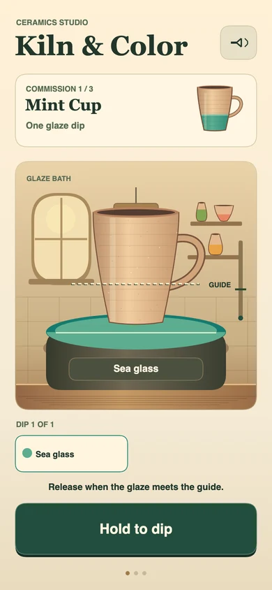
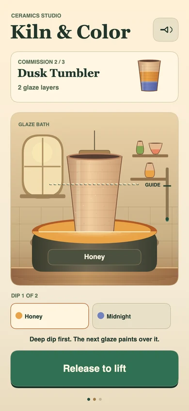
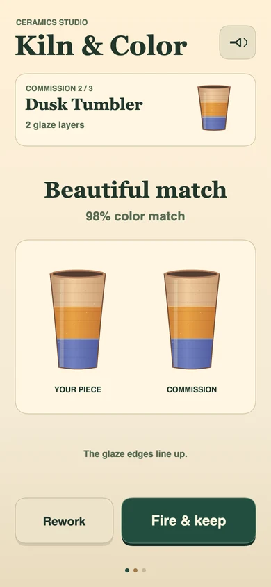
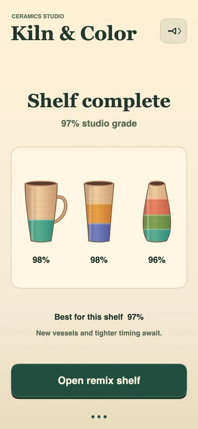

CAST N
Holding changes the cast, and releasing commits it. Here the held motion is visible as a vessel lowering into glaze.
Lower clay into a glaze bath, lift it at the guide, and fire a shelf of handmade pieces.
Play Kiln & Color
This recorded playtest reworks an early dip, fires the Mint Cup, and tests both glaze orders on the Dusk Tumbler. It finishes the shelf and starts a new commission in the remix.
Open the 27-second gameplay video


The bath line and the target guide give you a release point on the piece itself. When you dip again, the new glaze covers everything below its edge. Start with the deeper color to keep that upper band visible.